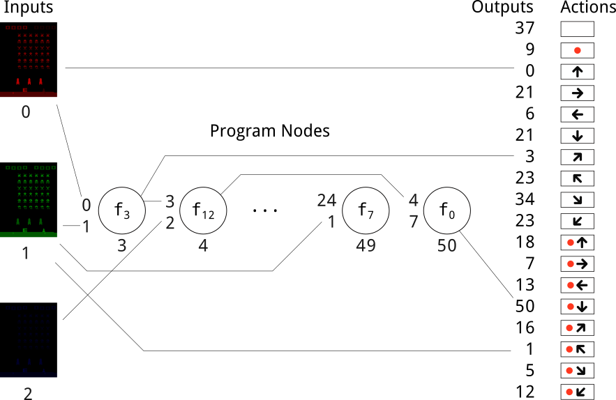

Evolving simple programs for playing Atari games
DG Wilson
dennis.wilson@irit.fr
Overview
- Arcade Learning Environment
- Cartesian Genetic Programming
- Atari playing with CGP
- Example programs from results
Arcade Learning Environment
[Bellemare et al., 2013]
- HyperNEAT [Hausknecht, 2012]
- DQN [Mnih et al., 2015]
- Dueling DQN [Wang et al., 2015]
- Prioritized experience replay [Schaul et al., 2015]
- Double DQN [Hasselt et al., 2016]
- A3C [Mnih et al., 2016]
- Tangled Problem Graphs [Kelly and Heywood, 2017]
Deep reinforcement learning

[Mnih et al., 2015]
HyperNEAT: Multiple representations
[Hausknecht, 2012]
TPG: Decimal Feature Grid

[Kelly and Heywood, 2017]
TPG: Multi-Task Learning
[Kelly and Heywood, 2017]
Cartesian Genetic Programming

[Miller, 2011]
CGP: Junk nodes
[Miller, 2001]
Recurrent CGP
[Turner and Miller, 2014]
Mixed-Type CGP
[Harding et al., 2012]
Image-Processing CGP
[Harding et al., 2013]
CGP for Atari playing
Mathematical functions
Statistical functions
Array functions
Results
Centipede

Kung Fu Master

Boxing
Thank you
https://github.com/d9w/CGP.jl